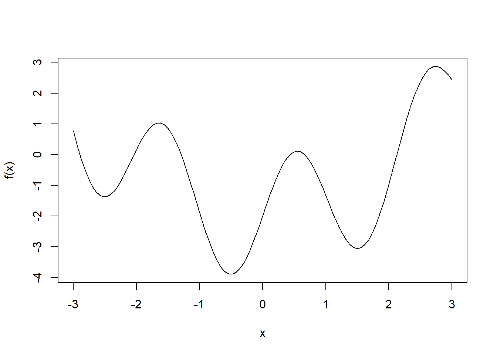

In general optimisation is about obtaining the best solution from all feasible solutions. There are two types, continuous and discrete. For continuous optimisation we try to minimise a function (if you want to maximise you can minimise the negative). The standard form of an optimisation problem is:
\[\begin{split} \textrm{arg}\min_{x}f(x) \textrm{ subject to } & g_{i}(x) \leq 0 \textrm{ for } i = 1,...,m \\ & h_{j}(x) = 0 \textrm{ for } j =1,...,p \end{split}\]
where \(f:\mathbb{R}^{N} \rightarrow \mathbb{R}\) is the objective function and \(g_{i}\) and \(h_{j}\) are constraints. The most common R function for constrained optimisation is constrOptim.
We examine the function:
f = function(x) 2*sin(3*x) + 0.4*x^2 - 2
curve(f, from = -3, to = 3)
optimize functionThis can be used on functions of one dimension. We call:
optimize(f, interval = c(-3, 3))## $minimum
## [1] -0.501298
##
## $objective
## [1] -3.895006optimize(f, interval = c(-0.8, 2))## $minimum
## [1] 1.503514
##
## $objective
## [1] -3.055174We see that optimize does indeed find the global minimum here, but changing the interval, even when the global minimum is still within can change the result. The function is based on the golden section search which can work well for a unimodal function where the minimum is within the interval. This is rarely the case but its one advantage is that it requires no evaluation of derivatives.
This aims to find the root of a function \(g\), it relies on the Taylor expansion at \(x_{0}\). We iterively apply: \[x \leftarrow x - \frac{g(x)}{g'(x)} \] To apply to an optimisation problem we solve for \(f'(x)\) = 0. If the initial guess is close to a local minimum then the convergence is rapid but if it is far away it can converge to any local minimum or maximum. It also requires second derivatives which are not always available.
There are three types of multi-dimensional algorithms:
Simplex methods - only use value of the function
Gradient type methods - use value of function and gradient vector
Newton type methods - Use value of function, gradient vector and Hessian matrix (or approximation)
In R these optimisations can be done through the nlm function which uses a Newton-type or optim which has a choice.
The Nelder-Mead is the standard simplex method. It is a directed search comparing values at various points. It has the advantage of not requiring derivatives but it only converges to local minimima, it can converge to non-stationary points and it is slow.
The most popular method here is gradient descent. In order to minimise a differentiable function \(f(x)\) we iterively take: \[x \leftarrow x - \gamma\nabla f(x) \] where \(\gamma\) is a small step value. This is simple but is slow can can zigzag on certain functions. optim uses the conjugate gradient (CG) which is an improved version. The main idea is that each step should be conjugate toward search directions at previous step to avoid zigzag. If the function is quadratic then CG is guaranteed to reach the minimum in n-steps where function is n-dimensional. It performs better than steepest descent in all cases but not as well as Newton type methods.
In the multi dimensional case Newton’s method becomes:
\[x \leftarrow [H f(x)]^{-1} \nabla f(x) \]
where we need the inverse of the Hessian. This can be expensive for multivariate problems as the Hessian can be very large. Quasi-Newton methods aim to replace this computation by a reasonable estimate. The most common quasi-newton method is BFGS which can be implemented by optim. The Hessian is approximated by \(B_{k}\) and it’s inverse \(B_{k+1}^{-1}\) is computed using \(B_{k}^{-1}\). As \(B_{k}\) are dense this can cause memory problems in high dimensions, L-BFGS is the low memory version which stores a few vectors rather than a full approximation.
Simulated annealing claims to always find the global minimum, but it is slow and can often fail to find the global minimum regardless. It only uses the value of the function like the simplex method. In optim the implementation is done with a Metropolis function for acceptance probability.
With dataset \((x_{1}, y_{1}), ...,(x_{m}, y_{m})\) and model \(y = f(x, \beta)\) where \(\beta\) are the parameters of the model \(f\) we define residuals \(r_{i} (\beta) = y_{i} - f(x_{i}, \beta)\). In a nonlinear least squares problem we aim to find \(\beta\) such that the sum of squared residuals is minimised. There a subclass of optimisation algorithms designed for nonlinear functions.
The Gauss-Newton algorithm is related to Newton’s method. The difference is that Gauss-Newton approximates the Hesian matrix of the objective functoin using Jacobian matrix \(J_{r}\) of the residue function. It approximates the Hesian with \(J_{r}^{t}J_{r}\) and then iterively does: \[\beta \leftarrow \beta - (J_{r}^{t}J_{r})^{-1}J_{r}^{t}r(\beta)\] This works well in practice but is not guaranteed to converge. The Levenberg-Marquadt algorithm addresses this using damping, instead pretending the Hessian is \(J_{r}^{t}J_{r} + \lambda I\). This is guaranteed to be invertible for some \(\lambda\).
So far the algorithms have all computed gradient vectors using all of the dataset. In big data applications, the dataset can be too large to hold in memory. This motivates Stochastic Gradient Descent (SGD). This takes the gradient direction using only a few data samples. It is popular for training neural networks where full back propogation is computationally expensive. The simplest form is: \[\beta \leftarrow \beta - \gamma r_{i} \nabla r_{i}(\beta)\] where \(i\) cycles through all data points. It can also be done by combining data samples into ‘minibatches’ and updating \(\beta\) with the samples in each minibatch.